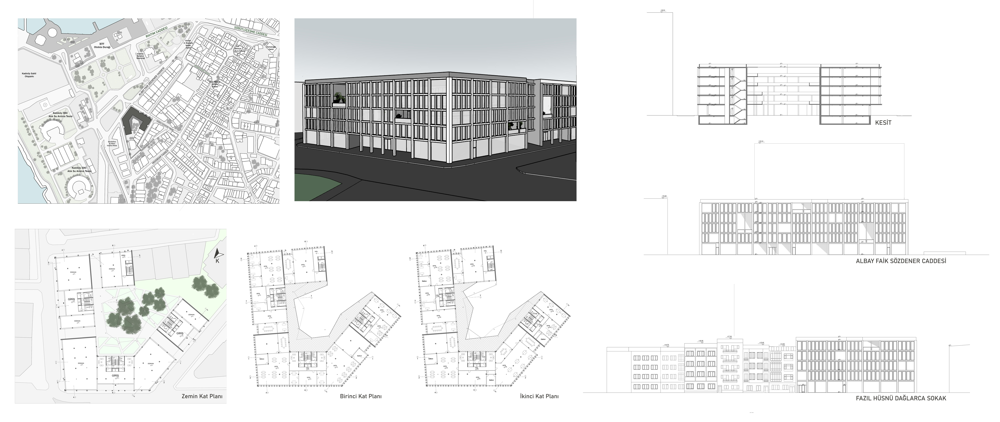

Kadıköy'de Ofis
Proje alanı Kadıköy rıhtımın silüetini oluşturan yapı adalarından bir tanesidir. Yapı adasında bitişik nizam ve ayrık nizamda apartmanlar bulunmaktadır. Fazıl Hüsnü Dağlarca Sokağı’ndaki nitelikli apartmanların silüeti korunarak yapı adasına yerleşilmiştir. Cephede kolon, döşeme gib ielemanlar öne çıkarılak okunması planlanmıştır. Zeminde boşluklar açılarak sokak ve avlu ilişkisi kurulmuş ve geçiş sağlanmıştır.
